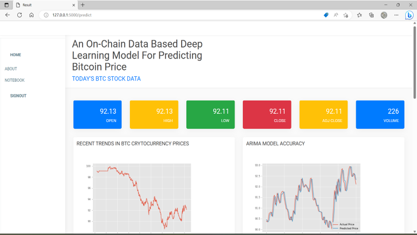

Project Title
An On-Chain Based Deep Learning Model For predicting BitCoin Price
Cryptocurrency has recently attracted substantial interest from investors
due to its underlying philosophy of decentralization and transparency.
To this end, the authors of this work propose a novel framework that predicts the price of Bitcoin (BTC),
a dominant cryptocurrency. For stable prediction performance in unseen price range, the change point detection technique is employed.
In particular, it is used to segment time-series data so that normalization can be separately conducted based on segmentation.
Furthermore, this work proposes self-attention-based multiple long short-term memory (SAM-LSTM), which consists of multiple
LSTM modules for on-chain variable groups and the attention mechanism, for the prediction model.
Data Processing preprocesses the raw On-chain data , which involves cleaning , normalizing and transforming the data into a format
suitable for using in the deep learning models. Normalization is a data preprocessing technique that can be used to transform the
scale of features in a dataset to a standard range. Techniques like Min-Max Scaling , Standardization.
Data cleaning involves removing missing values, outliers, and errors from your dataset.The preprocessed data is split into two parts
: a training set and a validation set. The training set is used to train the model, while the validation set is used to evaluate the
model's performance during the training process.User gives input as Symbol of cryptocurrency.
The given input is preprocessed and the data regarding cryto is scraped based yahoo finance.
Then based on the input cryto the tweets are scraped using tweepy.
With all this information , the defined models are used for prediction.
Final outcome is displayed through frontend.
OutPut Screens

Previous Page
Home Page
Next Page